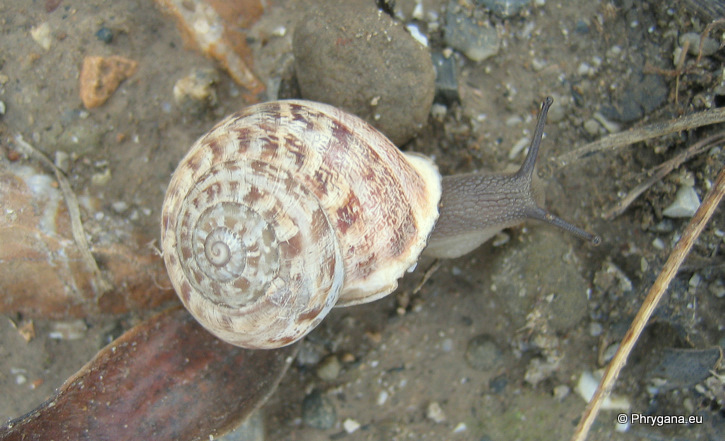
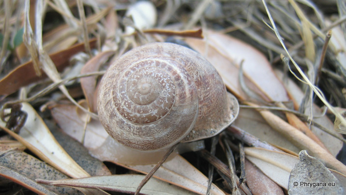

| PHRYGANA | Fauna | Flora |
additions nouveautés |
espèces species |
contact -
info - commentaires phrygana1 (at) gmail.com |
| diversité crétoise -- Cretan diversity | Galles et mines | ||||
| Eobania vermiculata (O.F. Muller 1774) |
| 225 | Fauna | HELICIDAE | Helicinae | Eobania P. Hesse 1913 |
 Eobania vermiculata Agia Galini 22 octobre 2007 |
| Synonyme: Helix vermiculata O. F. Muller 1774 | |
| en: Chocolate banded snail fr: la Mourguette | |
| Coquille (14 - 26 x 22 - 32 mm), épaisse, déprimée globuleuse convexe au dessus; 5 - 6 tours; sutures peu profondes; péristome épaissi et blanc; couleur de fond blanc crème; surface réticulée; bandes (5) brun foncé variables en intensité ou fusionnées; dessins variables composés | |
| Accouplement en automne après les premières pluies; ponte après quelques semaines (+- 70 oeufs): éclosion après 2 à 3 semaines; développement sur 2- 3 ans; estivation entre mai et octobre | |
| Espèce phytophage et détritiphage. | |
| Statut en Crète: indigène | |
| Biotopes en Crète: parcs, vergers, vignobles, olivaies, bords des villages, plaines littorales, phrygana. | |
| Altitudes: 10 - 1200 m | |
| Distribution: Europe méditerranéenne, Turquie, Crimée | |
| Note: Eobania vermiculata O. F. Muller 1774 est une espèce comestible appréciée; est sensible aux pesticides | |
|
 Eobania vermiculata Agia Galini 22 octobre 2007 |
| 24 octobre 2011 |
| © paul fontaine -- © Phrygana.eu 2007 -- 2013 |